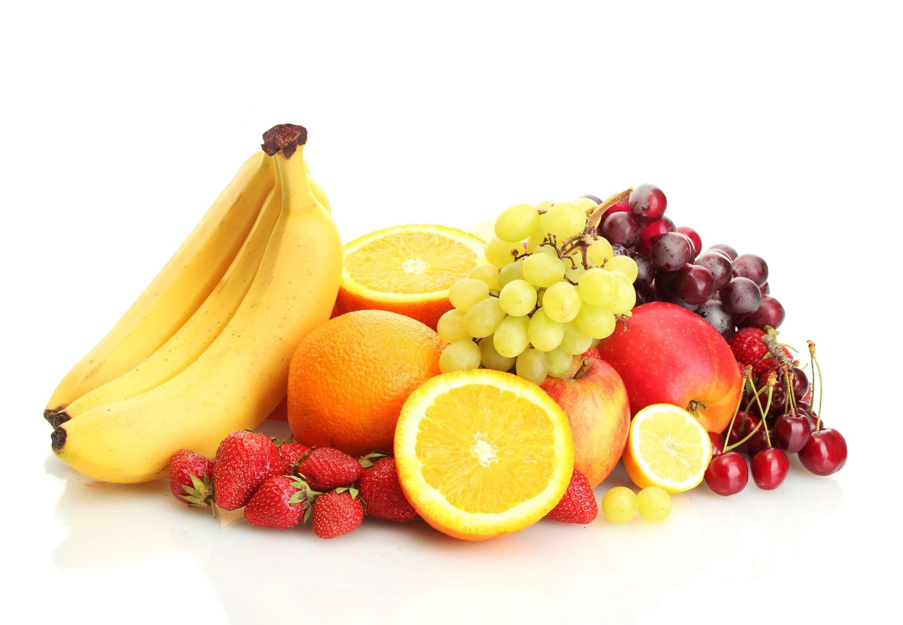
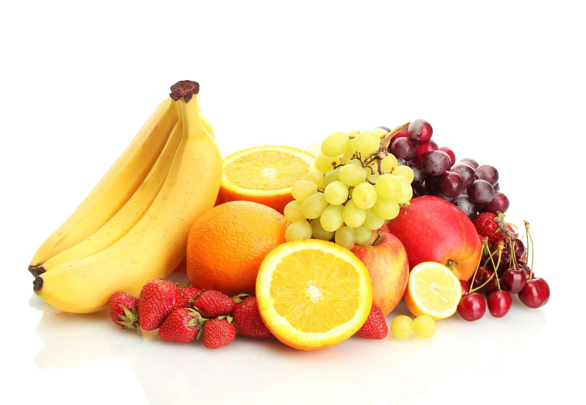
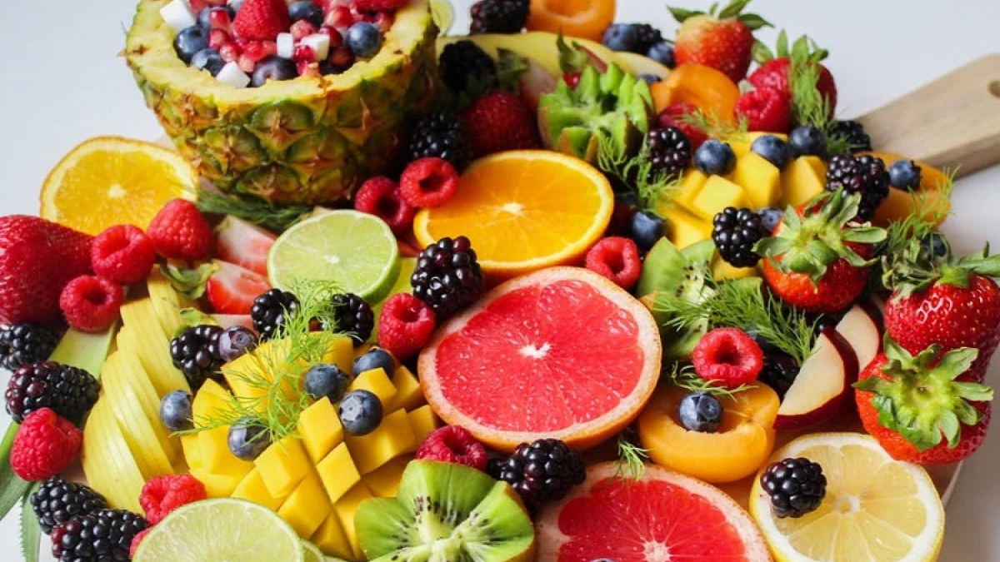
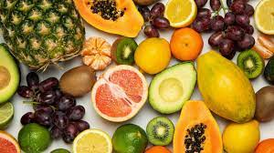
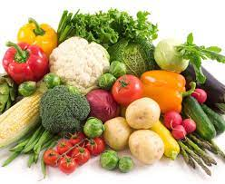
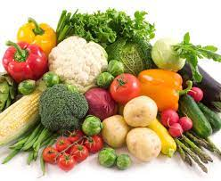
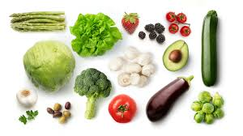
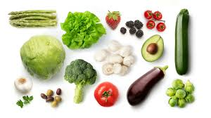

Test de frutas
 



Datos
-Las frutas son deliciosas
-Las frutas te dan vitaminas y minerales
-Las frutas te hidratan
Test de verduras
 

 

Datos
-Igual que las frutas tienen vitaminas y minerales
-Tienen mucha fibra
-Te ayudan al corazon
Resultado y conclusion
-Las frutas GANAN por que ademas que son deliciosas son saludables. Aunque las verduras tambien sirven para la salud. En conclusion come las dos